New Vulnerability
An installation by ucnv at Cultivate, Tokyo on Apr. 13-22, 2012
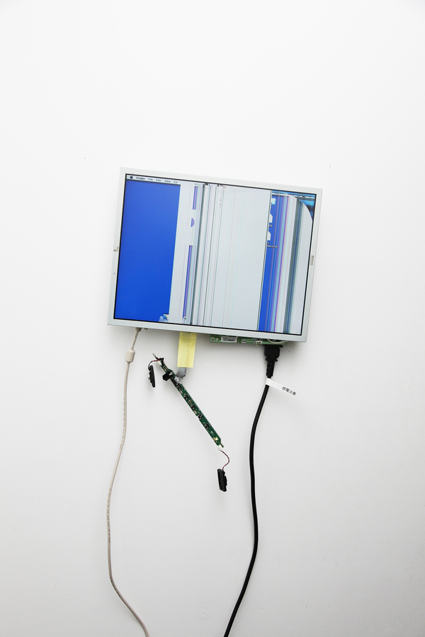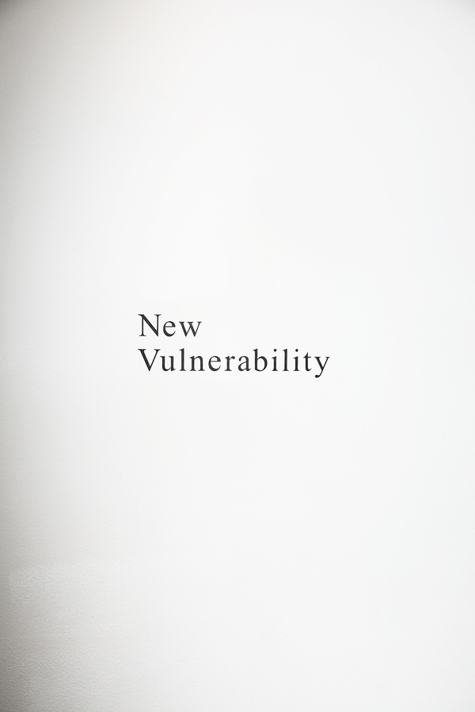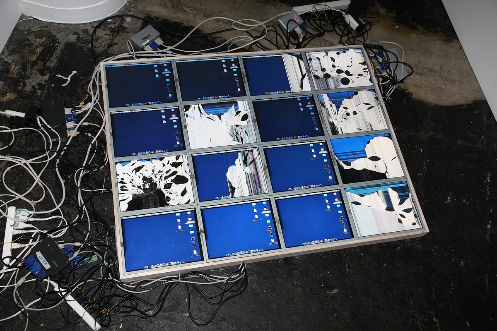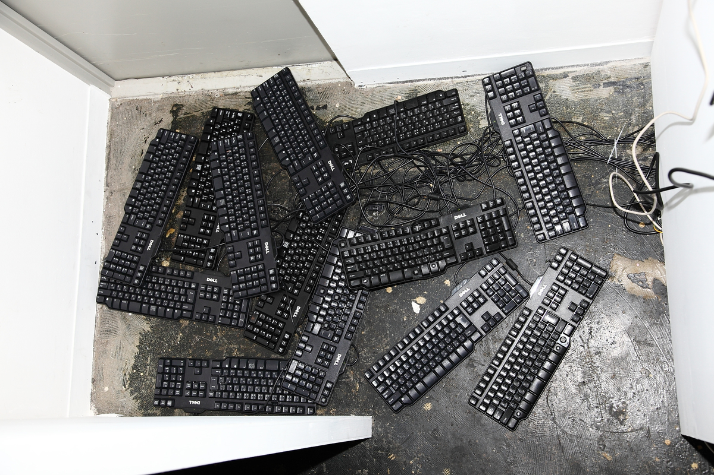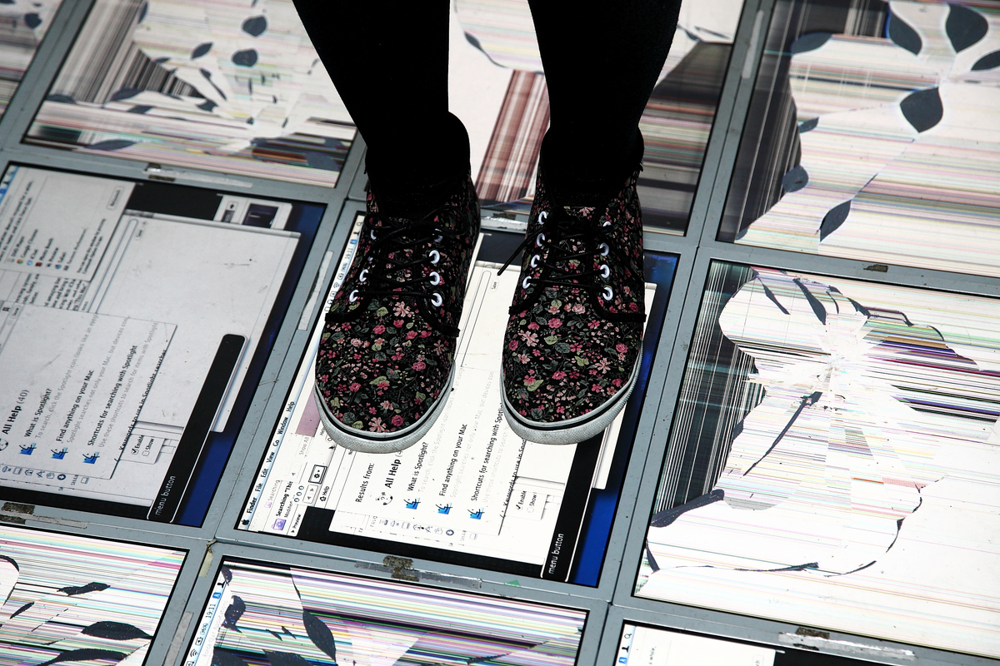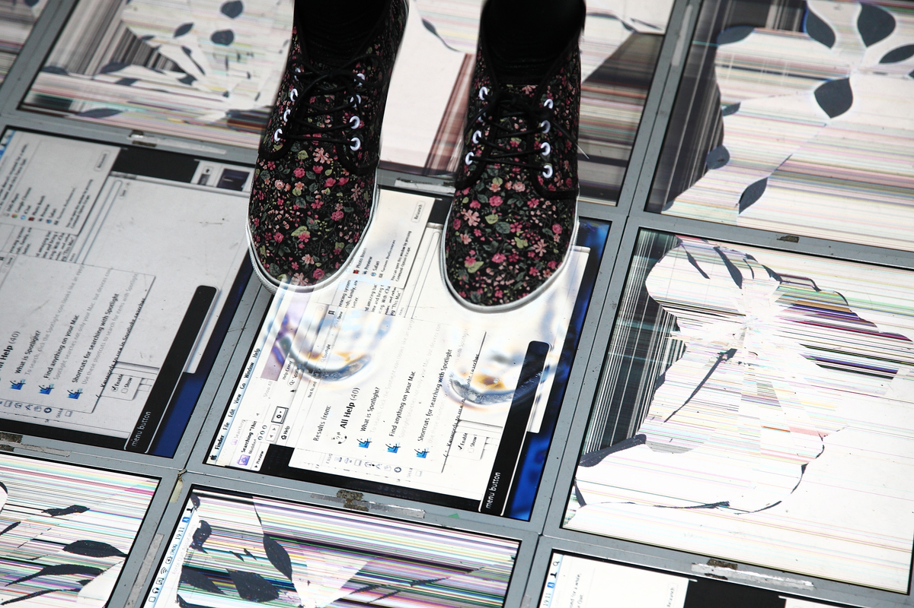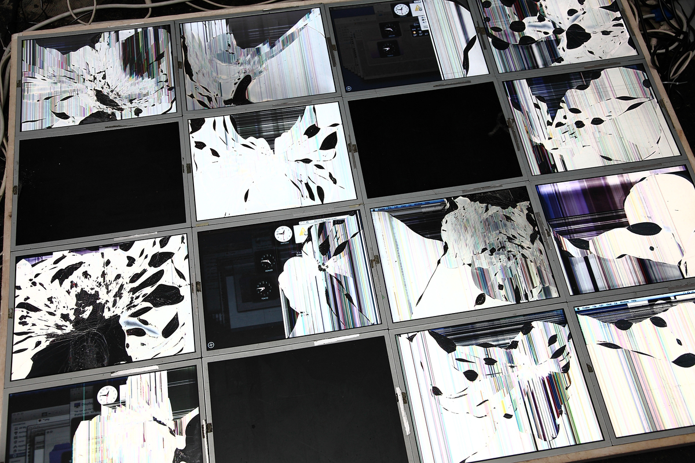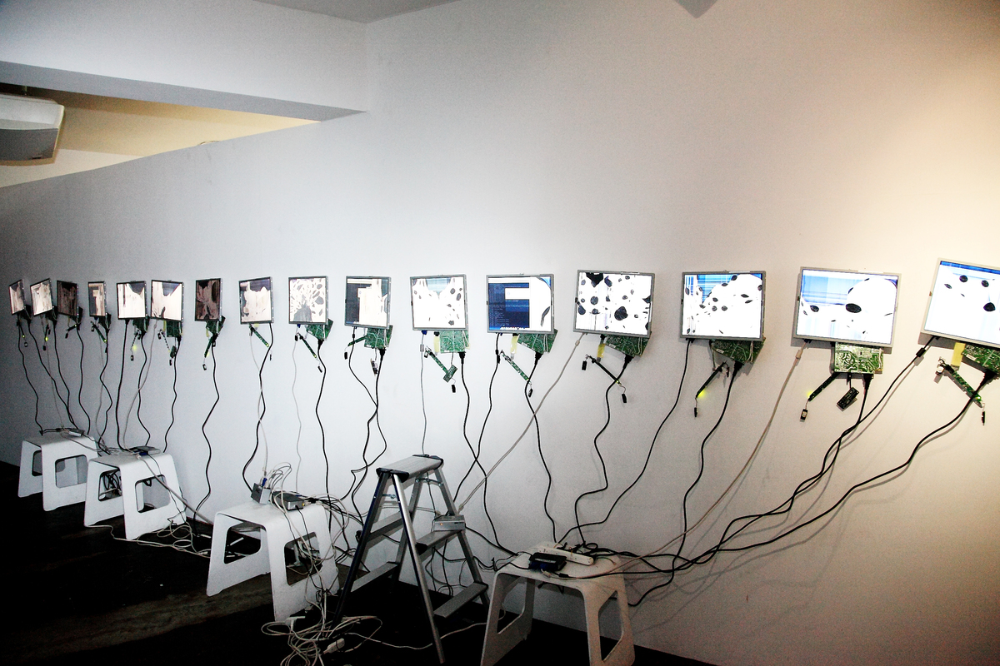
Info
http://www.cltvt.org/exhibiton/2012/04/08/729.html
Thanks to
Nukeme, Kei Sakawaki, Takahiro Kawaguchi, Suguru Kani, Masara Nakayama, Dorita, Shunsuke Takawo, Boctok Inc and Cultivate.
New Vulnerability
Re-exhibited with Nick Briz and Rosa Menkman at SUDLAB, Naple on Jan. 2014
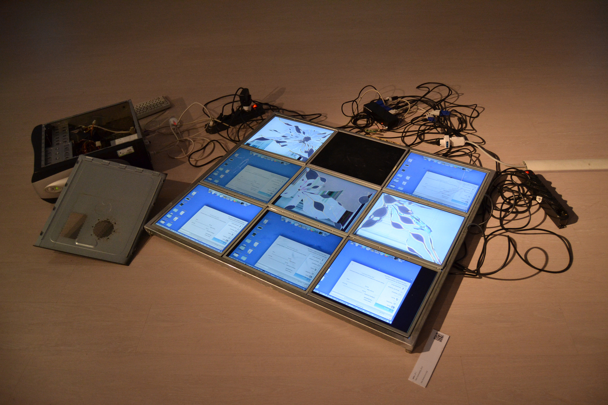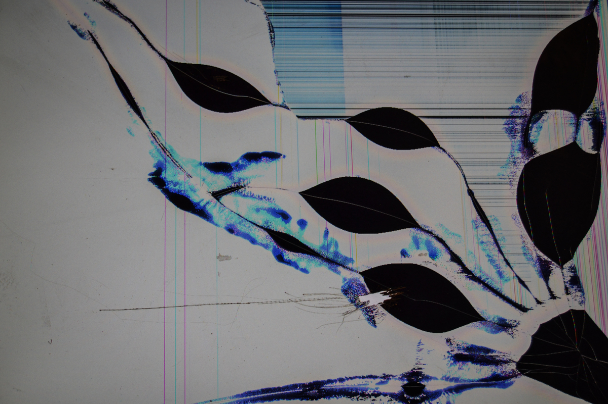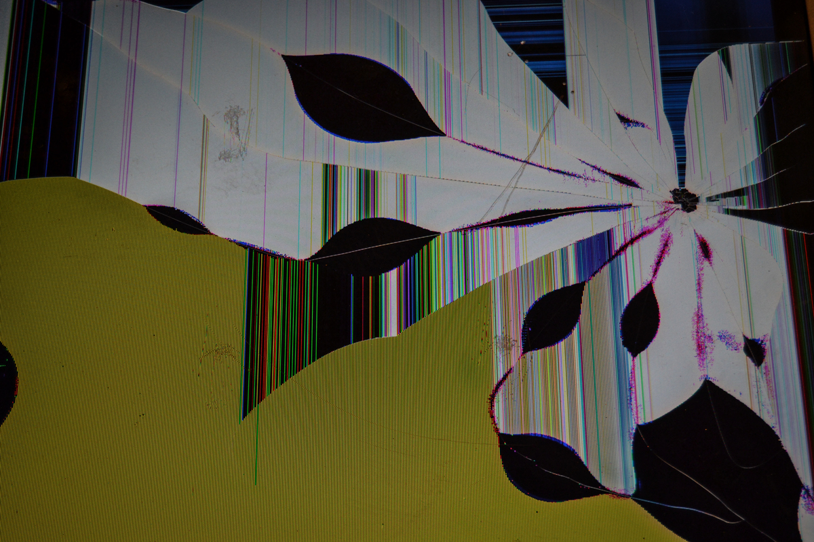
Photos and video by
Rosa Menknman